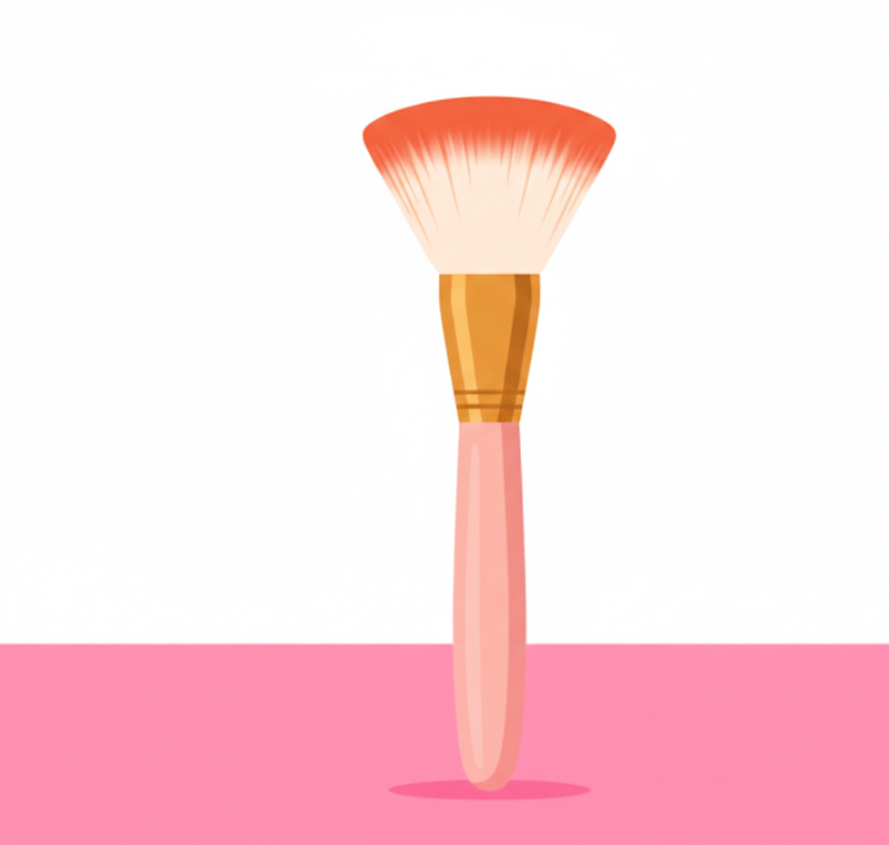

A brush is a cosmetic tool used to apply and blend makeup products such as foundation, powder, and blush. It comes in various shapes and sizes, each designed for specific purposes. Brushes are typically made from natural or synthetic bristles and are essential for achieving a professional and flawless makeup application.